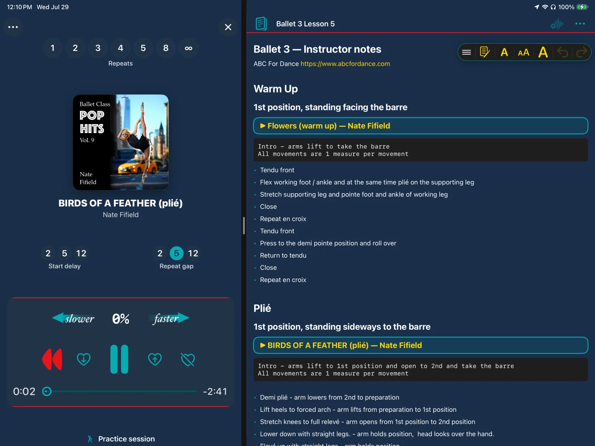
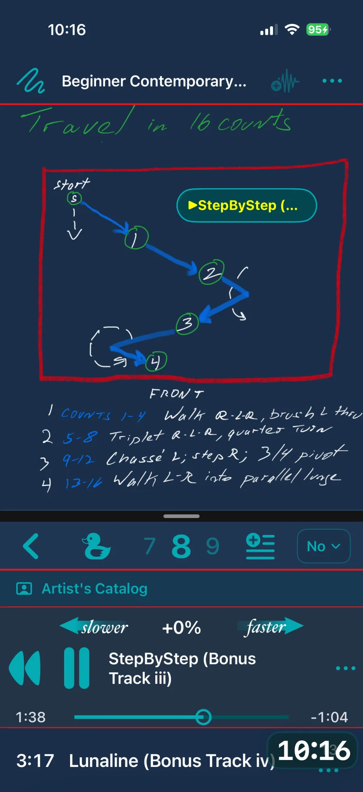
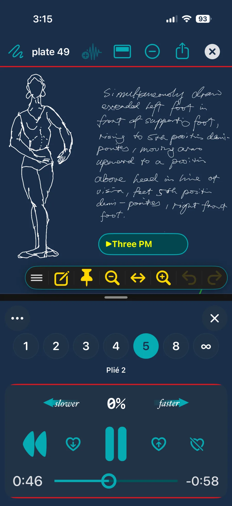
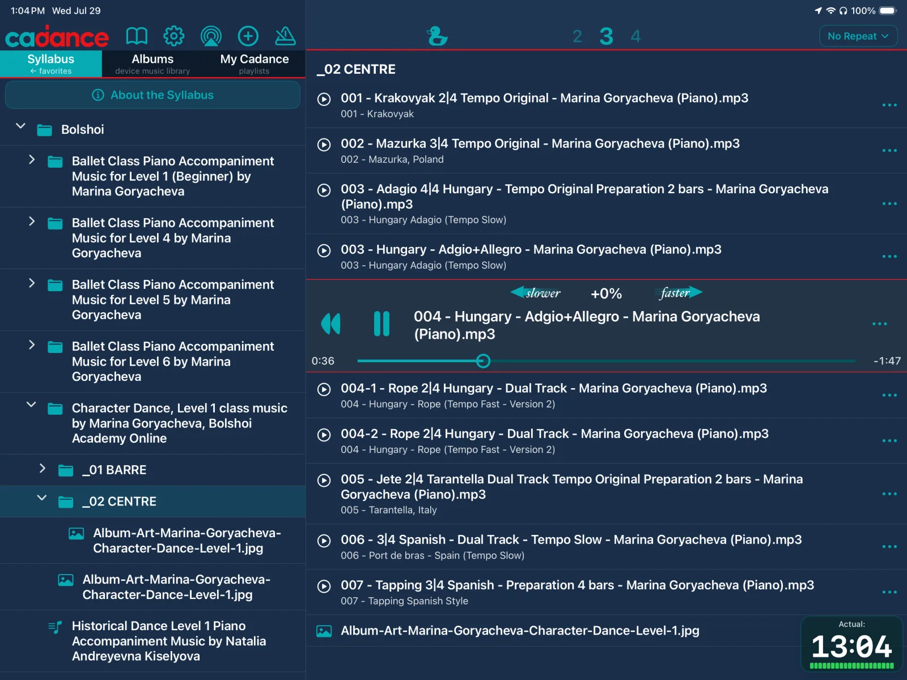

Features built around your teaching
Cadance v6 connects class planning, music, and practice. Keep your notes beside the tracks, then move into the focused playback experience you need.
Free to download. Teacher Notebook is included in Class Planning Mode, with 14 free Day Passes and 1 free Perfect Practice Pass for new users.
Teacher Notebook
Plan in the way you teach
Teacher Notebook is free in Class Planning Mode. Type a plan, handwrite a quick note, share it, and keep the music for that moment only a tap away.
Typed and handwritten notes
Use the format that matches your process, whether you are preparing a detailed lesson plan or sketching an idea between rehearsals.
Music links in context
Add Cadance track links to a note. Anyone reading the shared note can open the link and sample the connected music.
Ready across iPhone and iPad
Carry your notes from desk to studio and keep planning, teaching, and practice in one familiar workflow.



Access for the work in front of you
Day Pass
Activate a full day of Cadance when you are teaching. Day Passes never expire, and new users begin with 14 free passes.
Perfect Practice Pass
Choose one song and keep it ready for 30 days of choreography, rehearsal, practice, or filming. New users receive 1 free pass.
Focus Player
Focus Player is available with Artist access, an active Day Pass, or a Perfect Practice Pass, so the player stays out of the way of the work.
Artist feature
Bring the full syllabus into the room
Richer class material
Artist Syllabus supports text, PDFs, images, and video, so reference material can live with your teaching workflow.
Clear access boundaries
Teacher Notebook remains free for planning and sharing. Syllabus is the Artist workspace for richer professional teaching material.

Your class, your tempo
Perfect technique work
Slow down the tempo to build technique — ideal for ballet class music, tap classes, and detailed choreography work.
Challenge and upskill
Speed up the tempo to challenge your students and help them master complex, fast-paced routines.
Natural sound
Change tempo without distracting pitch changes so your music stays professional and clear.
Tools for effortless teaching
Find the perfect song in seconds
Powerful keyword search eliminates endless scrolling so you can stay focused on students.
Countdown to start
Set a countdown for short intros so you and your dancers can get in position and start together. (Spark+)
Master repetitive drills
Set the usual repeat count up to 4 for class drills. Focus Player also offers 5, 8, and infinite repeats for deeper practice.
Apple Watch support
Control class music from your wrist — start, pause, and skip tracks without picking up your phone. (Spark+)
Start from the top
Auto Rewind makes track auditions easy: when the rewind button is red (for the first 15 seconds) the track will rewind when you pause — so you’re ready for the “real” use for the students.
Built-in timers
Keep class moving with class timers and clock tools available in every detail view.
Duck / temporary mute
Lower the music quickly while keeping the timeline moving so you can instruct without breaking momentum.
Metronome
Build a rock-solid sense of rhythm with an integrated metronome. (Spark+)
Your music, perfectly organized
All your music in one place
Work with music from your device library, imported local files (Spark+), Apple Music on supported tiers, and Syllabus material.
Organize classes effortlessly
Create playlists and folders so each class has quick access to the right music at the right time.
Favorites that stay fresh
The Favorites tab keeps key albums and playlists front and center — and lets them gently decay over time so what you use most recently naturally rises to the top.
Reliable offline use
Because studio internet shouldn’t get in the way of a great class.
Cadance is not bundled with music and doesn’t sell music — bring your own.
Music sources and Apple Music support (by tier)
Class Planning Mode (Free)
Browse, organize, use Teacher Notebook, and preview music. It is planning access, not a playback tier.
Spark
The BarreNotes-equivalent playback tier for music in your device library and imported local files.
Artist
Adds support for DRM-protected music, Apple Music streaming, Focus Player, and Syllabus material.